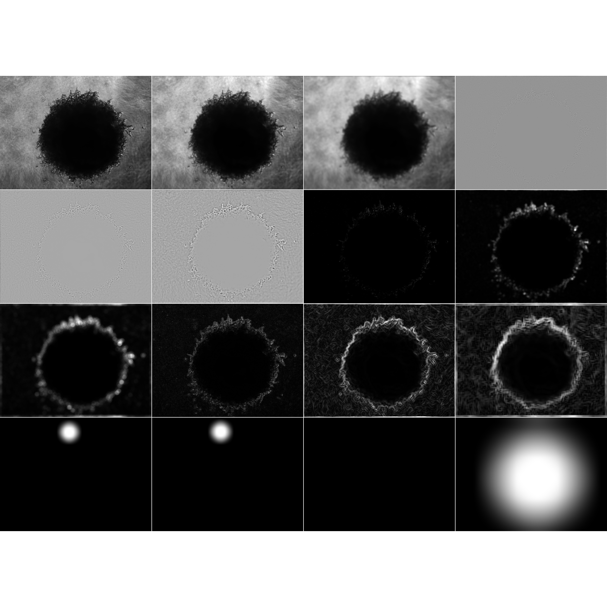

features
features.Rmdbase_image <- readImageBw(system.file(
"extdata", "4T1-shNT-1.png",
package = "clasifierrr"))
display(base_image, method = "raster")The features are just a series of filters applied to the main image. So it converts an image of heigh y and length x into a data frame of x * y number of rows and one column per feature.
feature_df <- calc_features(
base_image,
filter_widths = c(3, 15, 31),
shape_sizes = c(101, 201, 301, 551))
#>
#> Attaching package: 'purrr'
#> The following object is masked from 'package:EBImage':
#>
#> transpose
head(feature_df)
#> # A tibble: 6 x 16
#> gauss_filt_3 gauss_filt_15 gauss_filt_31 DoG_filt_3 DoG_filt_15 DoG_filt_31
#> <dbl> <dbl> <dbl> <dbl> <dbl> <dbl>
#> 1 0.478 0.363 0.352 -3.76e-9 -0.0995 -0.0453
#> 2 0.478 0.378 0.361 -3.05e-9 -0.0877 -0.0561
#> 3 0.478 0.388 0.368 -3.23e-9 -0.0771 -0.0493
#> 4 0.475 0.393 0.376 -3.05e-9 -0.0688 -0.0398
#> 5 0.475 0.396 0.382 -2.99e-9 -0.0667 -0.0337
#> 6 0.490 0.397 0.387 -3.76e-9 -0.0777 -0.0321
#> # … with 10 more variables: var_filt_3 <dbl>, var_filt_15 <dbl>,
#> # var_filt_31 <dbl>, sobel_filt_3 <dbl>, sobel_filt_15 <dbl>,
#> # sobel_filt_31 <dbl>, c_hough_trans_101 <dbl>, c_hough_trans_201 <dbl>,
#> # c_hough_trans_301 <dbl>, c_hough_trans_551 <dbl>you can see the features that were calculated by using the following function

